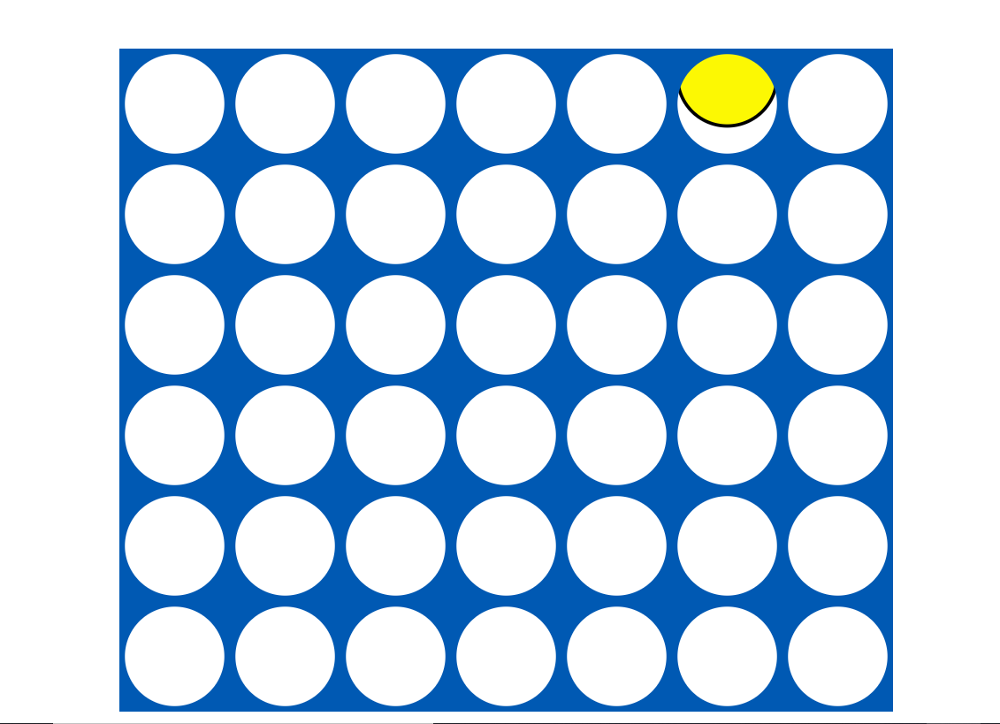

I was tasked to create a board game and decided to create a game of connect four. The board and pieces are created using SVG. As the play moves their piece the x position of the piece changes by 50 left to right or right to left. When the mouse is clicked the current piece is dropped to the bottom of the board and a different colored piece starts following the mouse. If piece 2 drops in the same x position of piece 1, the y position of piece 2 will equal the y postion of piece 1 minus 100. Theis makes it to where piece 2 will fall on top of piece 1 instead of falling behind it.
